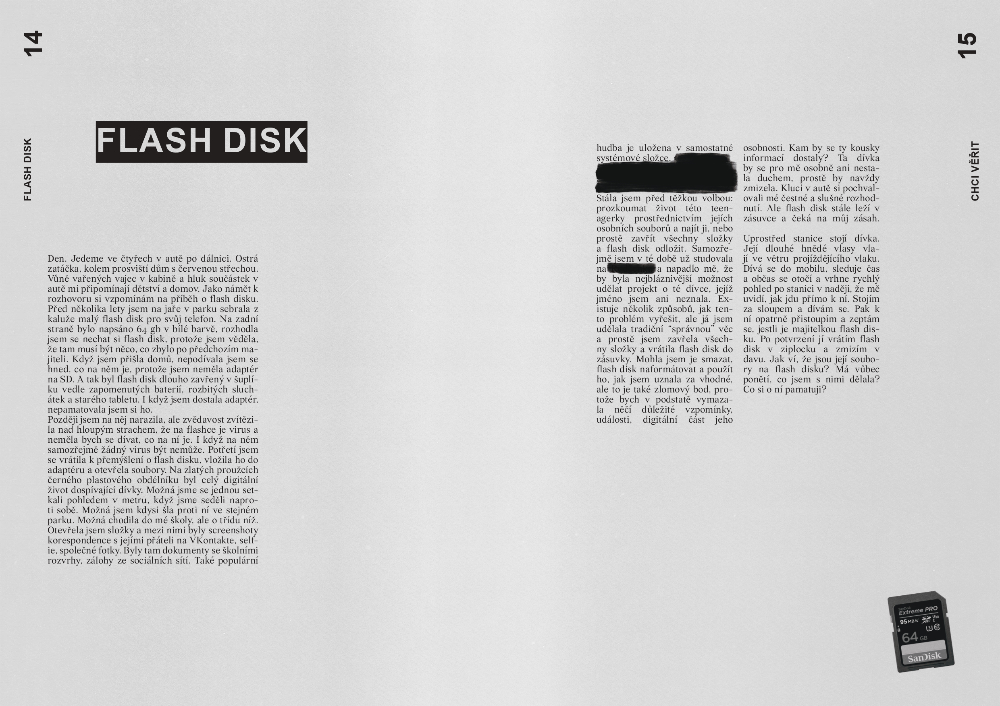
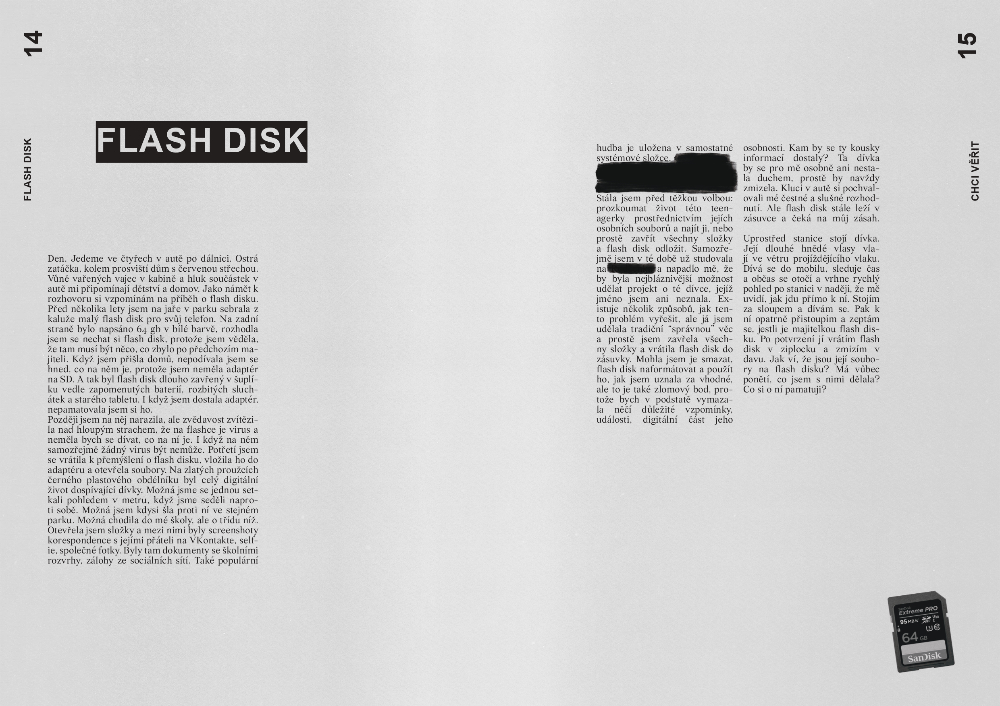

the ghost of a non-place , Brno, 2021
game interface and newspaper
special thanks for the help with:
development-Oleg Baranov
layout-Vita Shakhnovich
intro text:
I don't remember how long I've been wandering here. And I'm a little confused about where I am. Until recently, I had lived quietly here, where everything was clear and familiar to me. But at the same time, parallel to this ordinary city, there was also its twilight ghostly part.
The state of uncanny strangeness that emerged in this twilight zone permeated the domestic, and we ceased to recognize the very materiality of the place.
Transitional spaces became centers of nervousness and peace at the same time. The blurring of the objects of the urban environment and, ultimately, of the boundaries of one's own body and subject led to the loss of one's attachment to a sense of the individual. In a ghostly twilight, the city lost its status as home as the unstable and alien disrupted its tranquility. And in this world of constant change, the memory of place and other reference points became impossible. A sense of topophobia emerged, which was that one really began to be in free space, even if one was surrounded by known walls, since one no longer had the tools to describe them.
The once transitional zones became the entrance to a new dimension made up of the very non-spaces that turned space into flesh, viscous and full of gaps, where there is no island on which man could build his "home.
With the crisis of space comes the crisis of time and history, filling space with anachronisms. And in this timelessness, only nostalgia for an unfulfilled future, nostalgia for a lost organ of navigation, is stable. This is why I wrote this message in the hope of finding a place for dialogue that might restore lost connections and provide a new, albeit barely flickering, reference point.
interface versions to download:
ver. 1, Windows PC
#1 issue
This issue of the newspaper is a collection of stories and notes left on the bulletin board at the bus stop. A bus stop that never existed, yet exists in every city. As an organic part of urban infrastructure, the bus stop serves as an interface or gateway to a parallel dimension, the dimension of transit zones, or non-places, as Marc Auger puts it. The world of non-places gradually penetrates our world, leaving ghostly flickering elements invisible to us. This slow but dangerous mixing means the destruction, or rather the voluntary extinction, of our urban world. As a counter-attack, you can use the subversive interface (by downloading from the link on the qr code) to reclaim your place, reclaiming the historicity and identity of the emptied spaces through the power of the logos in dialogue with other inhabitants in the notes they have left behind.


 
